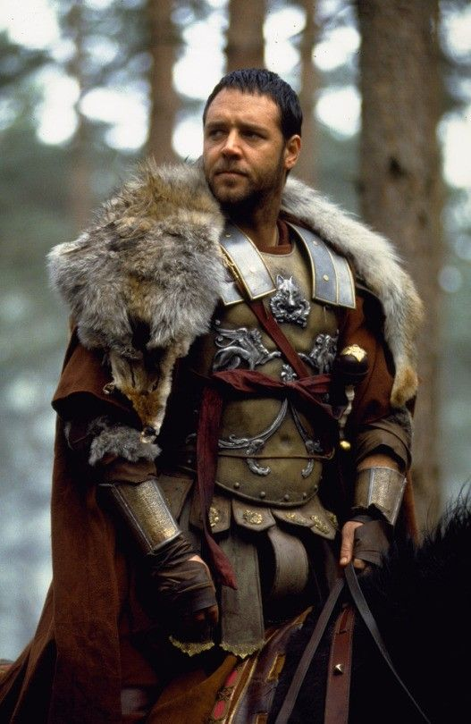

 I am Christoffel André Nel, Commander of the Armies of the South, General of the Felix Legions and loyal servant to the true emperor, Jesus Christ. Father to a murdered son, husband to a murdered wife. And I will have my vengeance, in this life or the next.
My story is one of honor, duty, and determination. Born in the Karoo, I rose through the ranks of manhood to become a highly respected General. Yet, my journey was not without its trials and tribulations. After being betrayed and left for dead, I was enslaved and forced to become a gladiator.
As a gladiator, I am known for my skill, my courage, and my unwavering resolve. Despite the brutality of the arena, I remain steadfast in my pursuit of justice and revenge. I continue to fight, not for the roar of the crowd, but to honor the memory of my wife and son, and to uphold the virtues of the love I once served.